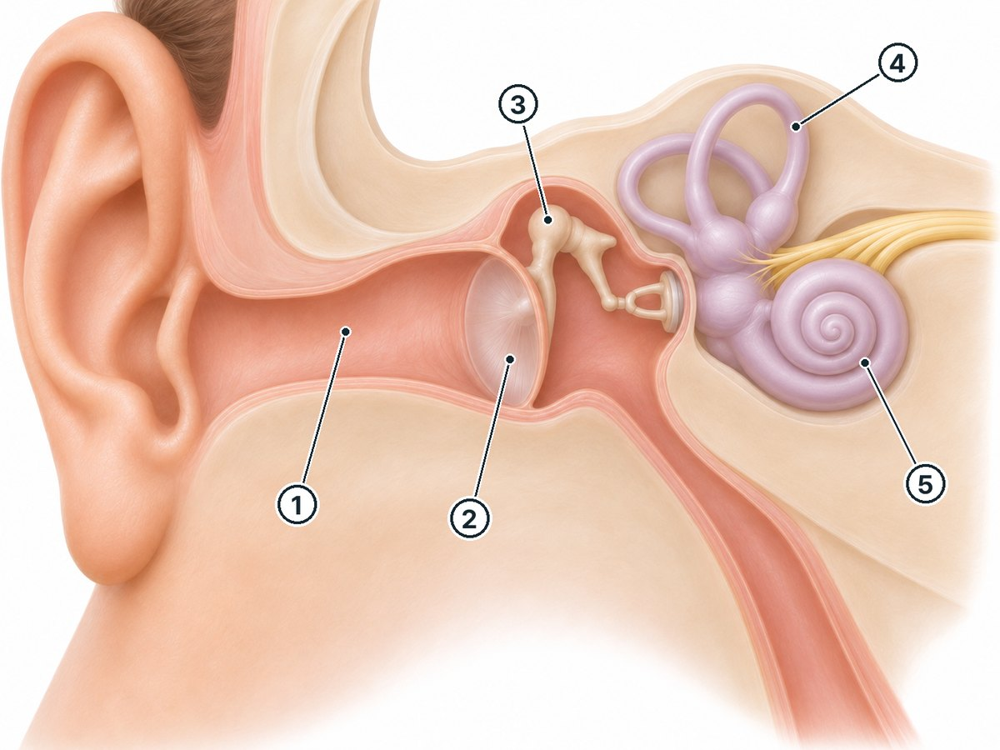

MEAW
MEAW턱이 불편한 사람에게 흔한 어지러움
턱관절 장애 환자를 모아 본 분석에서 어지러움은 40.8%에서 나타났습니다.1
턱관절 장애 환자 200명을 대상으로 한 연구에서는 턱 근육이 아픈 환자의 50%가 어지러움을 겪었습니다. 근육과 관절 문제가 함께 있는 환자는 41.6%, 관절에 문제가 있는 환자는 32.5%였습니다. 턱에 문제가 없는 사람은 14%였습니다.2
먼저 확인할 다른 원인
어지러움은 원인이 여러 가지입니다. 흔한 원인은 이비인후과, 신경과, 내과에서 먼저 확인합니다.3
| 양상 | 흔한 원인 |
|---|---|
| 머리를 움직일 때 잠깐씩 심하게 어지럽다 | 이석증 |
| 한쪽 귀가 잘 안 들리면서 어지럽다 | 메니에르병 |
| 갑자기 시작해 며칠 이어진다 | 전정신경염 |
| 두통이 있었거나 빛과 소리에 예민해지면서 되풀이된다 | 전정편두통 |
| 앉았다 일어설 때 핑 돈다 | 기립성 저혈압 |
| 약을 바꾸거나 여러 약을 함께 먹은 뒤 어지럽다 | 약물 부작용 |
바로 응급실로 가야 하는 신호
어지러움과 함께 아래 증상이 있으면 뇌혈관이나 심장의 급한 문제일 수 있습니다.3, 15, 16
- 물체가 둘로 보인다
- 말이 어눌해진다
- 팔다리에 힘이 빠지거나 감각이 둔해진다
- 혼자 걷지 못할 만큼 비틀거린다
- 전에 없던 심한 두통이나 뒷목 통증이 갑자기 시작되었다
- 한쪽 귀가 갑자기 잘 안 들린다
- 가슴이 아프거나 두근거리고, 정신을 잃을 것 같다
- 머리나 목을 다친 직후 어지러움이 생겼다
턱과 관련된 어지러움의 양상
다른 원인을 확인한 뒤에도 아래 증상이 턱 증상과 함께 있으면 턱관절도 확인합니다.
- ✓귀 검사와 뇌 검사는 정상인데 어지러움이 이어진다
- ✓턱이 아픈 날 어지러움도 심해진다
- ✓목과 어깨가 아픈 날 더 어지럽다
- ✓이명이나 귀 먹먹함이 같이 있다
턱과 어지러움이 이어지는 원리
귀와 붙어 있는 턱관절
턱관절은 귓구멍 바로 앞에 있습니다. 균형을 맡는 기관은 그 안쪽 속귀에 있습니다.
씹는 근육과 귀 안에서 고막을 당기는 작은 근육은 같은 신경(삼차신경)이 맡고 있습니다.4 턱관절과 가운데귀의 작은 뼈(망치뼈)를 잇는 가는 인대도 있습니다.5
턱 근육이 오래 긴장하면 귀 안의 압력 조절에 영향을 줄 수 있다는 설명이 있습니다.4
목에서 오는 위치 감각
우리 몸은 눈, 속귀, 목에서 오는 신호를 모아 균형을 잡습니다. 목의 근육과 관절이 보내는 위치 신호가 눈이나 속귀의 신호와 어긋나면 어지러움이 생길 수 있다는 설명이 있습니다.6
턱과 목의 근육은 함께 움직입니다. 턱관절 장애가 있으면 목 근육도 같이 굳는 일이 많습니다.14
뇌줄기에서 만나는 두 신경
얼굴과 턱의 감각을 맡는 삼차신경은 뇌줄기(뇌 아래쪽 가운데 부분)로 들어갑니다. 균형을 맡는 신경 중추도 뇌줄기에 있습니다. 동물 연구에서 두 곳을 잇는 신경 길이 확인되었습니다.7
편두통 환자 10명의 눈 위쪽 삼차신경 가지를 자극한 연구에서는 8명에게 눈 떨림이 새로 생기거나 달라졌습니다. 건강한 사람 10명에게서는 나타나지 않았습니다.8 눈 떨림은 균형을 맡는 신경계가 자극받을 때 나타납니다.
함께 오는 편두통
턱관절 장애가 있는 사람은 편두통이 있을 가능성이 2.6배가량 높았습니다.9 편두통이 있으면 두통이 없을 때에도 어지러움이 되풀이될 수 있습니다. 이를 전정편두통이라고 합니다.16, 17

- 1귓구멍턱관절은 이 바로 앞에 있습니다
- 2고막귓구멍 끝의 얇은 막
- 3귓속뼈고막의 떨림을 속귀로 전하는 작은 뼈
- 4반고리관균형을 맡는 기관
- 5달팽이관소리를 듣는 기관
치료 뒤의 변화
귀 증상이 함께 있는 턱관절 장애 환자 200명을 치료한 연구가 있습니다. 턱 증상이 충분히 좋아진 환자 가운데 91%에서 어지러움도 줄거나 사라졌습니다.10
귀에서 원인을 찾지 못했고 턱이나 관자놀이에 증상이 있던 환자에게 스플린트(입안에 끼우는 교합안정장치)와 자가관리 교육을 함께 한 연구에서는, 3개월 뒤 91%에서 어지러움이 중간 정도 이상 나아졌습니다.11
기존 치료로 잘 조절되지 않던 메니에르병 환자 가운데 턱관절 장애가 함께 있는 환자의 2년 기록을 비교한 연구도 있습니다. 스플린트 치료를 받은 37명 가운데 86.5%에서 반복되는 심한 어지러움이 잘 조절되었습니다. 받지 않은 26명에서는 19.2%였습니다.12
메니에르병 환자 24명에게 턱과 목을 함께 치료하고 3년 동안 경과를 본 연구에서는 어지러움의 세기와 횟수가 줄었다는 결과가 나왔습니다.13
다른 원인을 찾지 못한 어지러움이 턱 증상과 함께 있다면 턱관절도 확인합니다.
참고문헌
- Porto De Toledo I, Stefani FM, Porporatti AL, et al. Prevalence of otologic signs and symptoms in adult patients with temporomandibular disorders: a systematic review and meta-analysis. Clin Oral Investig. 2017;21(2):597–605.
- Tuz HH, Onder EM, Kisnisci RS. Prevalence of otologic complaints in patients with temporomandibular disorder. Am J Orthod Dentofacial Orthop. 2003;123(6):620–623.
- Muncie HL, Sirmans SM, James E. Dizziness: approach to evaluation and management. Am Fam Physician. 2017;95(3):154–162.
- Ramírez LM, Ballesteros LE, Sandoval GP. Topical review: temporomandibular disorders in an integral otic symptom model. Int J Audiol. 2008;47(4):215–227.
- Rodríguez-Vázquez JF, Mérida-Velasco JR, Mérida-Velasco JA, et al. Anatomical considerations on the discomalleolar ligament. J Anat. 1998;192(Pt 4):617–621.
- De Hertogh W, Micarelli A, Reid S, et al. Dizziness and neck pain: a perspective on cervicogenic dizziness exploring pathophysiology, diagnostic challenges, and therapeutic implications. Front Neurol. 2025;16:1545241.
- Diagne M, Valla J, Delfini C, et al. Trigeminovestibular and trigeminospinal pathways in rats: retrograde tracing compared with glutamic acid decarboxylase and glutamate immunohistochemistry. J Comp Neurol. 2006;496(6):759–772.
- Marano E, Marcelli V, Di Stasio E, et al. Trigeminal stimulation elicits a peripheral vestibular imbalance in migraine patients. Headache. 2005;45(4):325–331.
- Dias MF, Ferro AC, Spavieri JHP, et al. Exploring the bidirectional association between migraine and temporomandibular disorders: a systematic review and meta-analysis. J Oral Rehabil. 2026;53(3):794–806.
- Wright EF. Otologic symptom improvement through TMD therapy. Quintessence Int. 2007;38(9):e564–e571.
- Wright EF, Syms CA 3rd, Bifano SL. Tinnitus, dizziness, and nonotologic otalgia improvement through temporomandibular disorder therapy. Mil Med. 2000;165(10):733–736.
- Bernkopf E, Capriotti V, Bernkopf G, et al. Oral splint therapy in patients with Menière's disease and temporomandibular disorder: a long-term, controlled study. Eur Arch Otorhinolaryngol. 2023;280(3):1169–1182.
- Björne A, Agerberg G. Symptom relief after treatment of temporomandibular and cervical spine disorders in patients with Meniere's disease: a three-year follow-up. Cranio. 2003;21(1):50–60.
- Cuenca-Martínez F, Herranz-Gómez A, Madroñero-Miguel B, et al. Craniocervical and cervical spine features of patients with temporomandibular disorders: a systematic review and meta-analysis of observational studies. J Clin Med. 2020;9(9):2806.
- Edlow JA, Carpenter C, Akhter M, et al. Guidelines for reasonable and appropriate care in the emergency department 3 (GRACE-3): acute dizziness and vertigo in the emergency department. Acad Emerg Med. 2023;30(5):442–486.
- Newman-Toker DE, Edlow JA. TiTrATE: a novel, evidence-based approach to diagnosing acute dizziness and vertigo. Neurol Clin. 2015;33(3):577–599.
- Lempert T, Olesen J, Furman J, et al. Vestibular migraine: diagnostic criteria. J Vestib Res. 2022;32(1):1–6.